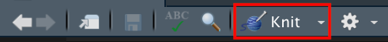
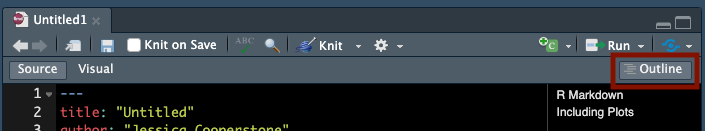

![Two fuzzy round monsters dressed as wizards, working together to brew different things together from a pantry (code, text, figures, etc.) in a cauldron labeled “R Markdown”. The monster wizard at the cauldron is reading a recipe that includes steps “1. Add text. 2. Add code. 3. Knit. 4. (magic) 5. Celebrate perceived wizardry.” The R Markdown potion then travels through a tube, and is converted to markdown by a monster on a broom with a magic wand, and eventually converted to an output by pandoc. Stylized text (in a font similar to Harry Potter) reads “R Markdown. Text. Code. Output. Get it together, people.](img/rmarkdown_wizards.png)
R Markdown for Reproducible Research
Week 3
Introduction
Today we will talk about R Markdown, which I will use for sharing you content for this course, and which you will use for completing your assignments. This is not a comprehensive guide R Markdown, but after this session, you will have the tools you need to get started. With all coding, mastery comes with practice, so let’s get started.
Setting future you up for success
How often do you conduct some kind of data analysis, get some results, ignore the project for 6 months, then return back to your data and realize you can’t figure out exactly what you did?
This does not need to happen to you. Be kind to your future self and take steps to avoid this avoidable problem.
Just like a lab notebook helps you document all of the steps you take in your wet lab work, R Markdown can function like a lab notebook for all your data analyses.
What is R Markdown?
RMarkdown provides a framework for saving and executing code, and sharing your results. R Markdown files have the file format .Rmd.
What is R Markdown? from RStudio, Inc. on Vimeo.
A minute long introduction to R Markdown
You can do so many things in R Markdown, from making reports that include text, code, code annotations, figures, tables etc., to creating this course website!
If you’ve never used R Markdown before, you can download it using the chunk below. Unlike other R packages, you don’t need to use library(rmarkdown) to load the package each time you want to use R Markdown.
install.packages("rmarkdown")Why I love R Markdown
Basically everything I do in R uses R Markdown. I really value to ability to easily add text and annotate code so that future me, my team, or collaborators can understand what I’ve done and why. I try to write my code in such a way that it could be read by anyone, and is ready to be pushed to our lab’s Github repositories to act as supplementary materials for our publications. It helps others to be able to truly see what we’ve done, and I think makes science more reproducible and open.

Open an R Markdown document
Open up RStudio, go to File > New File > R Markdown. Change the name of the title to something meaningful to you, mine will be called “Trying R Markdown”.
Saving our file
We gave our file a title, but if you look at the top left corner of our new document, you’ll see it’s called “Untitled1”. Let’s change the name to something easier for our future selves to recognize.
You can go to File > Save as and place this new R Markdown with your other course materials, and save it with a meaningful name.
Always having issues with setting your working directory? R Markdown solves this problem! The default working directory is the location of the saved R Markdown file. Voila!
An example
You’ll note when you create your template document, it is not blank. So you get a sense of what these documents will look like when they are “run,” let’s do that with the template doc.
In the taskbar of your R Markdown document you will see a button called Knit in your task bar (there is a little ball of yarn with knitting needles next to it). If you click it, R will run all of the code in your R Markdown file, and default compile it to a .html file (though you can select to compile to other file formats).

Let’s compare what our document looks like when viewing it in RStudio (left), and after it is knitted (right).
If you have a little bit of R experience, you can begin to see how (some of) the content on the left related to the knitted document on the right. We see text, code chunks (but not all of them), and the output of code.
Now that we have seen a template R Markdown and have 10,000 foot view as to what it is, we can start going through what the different pieces of the document are.
Components of an R Markdown document
There are 3 main parts of an R Markdown document:
- The YAML (rhymes with camel) header
- Text
- Code
YAML Header
The YAML (Yet Another Markdown Language, or YAML ain’t markup language, if you want to learn more about this name and its origins, you can read about it at this stack overflow post) is at the top of your document and is surrounded by ---.
The YAML is where you can set the content that will show up on the top of your knitted document.
- title: “Your title but put it in quotes”
- author: “The author and still in quotes”
- date: the date you want at the top of your doc in quotes. If you want this to be today’s date (whatever that is) you can use “2023-10-10”
- output: will indicate the format of your compiled document. I would recommend for this class you use html_document as it is the richest format. Your output will be a .html file, which you can save or share.
Here’s a simple example.
---
title: "This is my descriptive title"
author: "Jess"
date: "May 10, 2022"
output: html_document
---In the YAML, you can also set options that govern how your document will be compiled within output. For example, you can add a table of contents, make that toc float, add a theme, number your sections, and add a button that allows someone to click and access your .Rmd from your knitted .html file. This last one is especially nice because it allows you to send one viewable document, and if someone wants to edit it, they can download and do so easily.
Here’s an example of what a more customized YAML could look like.
---
title: "This is my descriptive title"
author: "Jess"
date: "May 10, 2022"
output:
html_document:
toc: true
toc_float: true
number_sections: true
theme: flatly
code_download: true
---Be sure you pay attention to the indents (which are 2 or 4 spaces, and not tabs), as the YAML is picky here. If your indents are not correct, you will get an error when you knit. (Pro tip: you can set in RStudio to insert spaces when you click tab by going to Preferences > Code > Use spaces for tab (and indicate 2).)
Above are just some of the options that I like to put in my YAML, but there are tons more. Additional output options that are explained on the second page of the RStudio R Markdown cheatsheet.
Text
Unlike an R script (.R), where R by default interprets anything as code (and material that isn’t code needed to be commented out by using #), in an R Markdown, the default is text (and code exists only within code chunks or backticks).
The text portion of the document is written in a language called Markdown (which is why this format is called R Markdown). The philosophy of Markdown is that it is easy to both write and read. If you want to learn more about markup languages I’d recommend the this brief explanation by Michael Broe from a past Code Club Session and the Markup language wikipedia page.
If we look back to our template R Markdown, we can see there is text written in the same way that we would write in Word document, or an email, and we recognize immediately as text (i.e., the sentence at line 24).
But we can also see markup that is perhaps not immediately, recognizable, for example, the **Knit** on line 16. In this case, two asterisks around a word will make it compile to be bolded (second paragraph in the right photo).
Below I’m compiling some commonly used markdown syntax.

Note, the headers are useful and will indicate the levels in your table of contents. You want to use them, and make them meaningful for your document.
You can use Markdown to insert tables, images, mathematical formulas, block quotes, and almost anything else you’d like. You can even write your papers and dissertation in R Markdown. This course website is made with distill and R Markdown. My lab website is made with R Markdown and the hugo Aperó theme. Here are some links where you can find lots of other Markdown syntactical information:
- Markdown Guide
- R Markdown reference guide
- R Studio R Markdown Cheatsheet
- just google for what you want
So how is this useful for this course and making your own data analyses more reproducible? You can embed text along with your code, where you provide introductory information, your rationale for data analysis decision making, links and more information about interpreting your code and its output, provide context as to your results, and anything else that would aid your data’s interpretation.
Code
Code chunks are the parts of your R Markdown document where code lives. You can insert a new code chunk by:
- using the keyboard shortcut
Cmd+Option+I(Mac) orCtrl+Alt+I(Windows) - typing
```{r}and```(and your code goes in between) - using the Add Chunk command in the editor toolbar and select R
Code chunks look like this:

The code goes in the empty line, and there can be more than 1 bit of code per chunk.
- the gear allows you to modify the chunk options (we are going to talk more about this)
- the triangle with the line below it runs all code chunks that come previous to this chunk
- the play button runs the current chunk
You can still add comments within a code chunk, but you need to comment them out using #.
# here is my in chunk annotation
some_function()When you knit your R Markdown, this process will run all of the code in your document. This means if you have code that throws errors or doesn’t work, your document will not knit. This is some of why I am asking you to knit for your final assignments - all your code needs to work!
You can also embed code inline (i.e., within your text).
| Raw | Rendered |
|---|---|
There are `r 365*24` hours in a year |
There are 8760 hours in a year |
There are `r nrow(cars)` observations (i.e. rows) in the cars dataset |
There are 50 observations (i.e. rows) in the cars dataset |
Think about how you could use this – embed information from your data analysis (e.g, p-values) within your narrative text without having to hard-code/type it in manually.
Adding options to your code chunks
You add options to your code chunks between the {}. This gives R additional instructions regarding running your code and compiling your document. Here are some common examples:
echo = FALSEruns your code chunk, displays output, but does not display code in your final doc (this is useful if you want to show a figure but not the code used to create it)eval = FALSEdoes not run your code, but does display it in your final docinclude = FALSEruns your code but does not display the code or its output in your final docmessage = FALSEprevents messages from showing up in your final docwarning = FALSEprevents earnings from showing up in your final docfig.height = Xandfig.width = Ywill allow you to specify the dimensions of your figures (in inches)fig.align =can be set to “left”, “right”, or “center”fig.cap = "Your figure caption"will allow you to set a figure captionfig.alt = "Your alt text"will allow you to set alt text for screen readerscache = TRUEwill cache results, meaning if you have a chunk that takes a long time to run, if you haven’t changed anything and you knit again, the code won’t run again but access the cache.
A few add ons
Adding a table of contents in RStudio
When you have a long document with code, its useful to have a table of contents so that you can quickly navigate from one section of your document to another.
You can turn on the table of contents by clicking the button highlighted below.

Remember, the headers in your table of contents are set by your # using the header hierarchy we already talked about.
Naming chunks
To be able to better navigate between chunks, you can provide names for your chunk within the {}, just as you set options. Here is an example:
Then, you can see and navigate between your chunks at the bottom left of the R Markdown portion of RStudio, just above the console (if you have the default configuration).
The visual editor
In RStudio version 1.4 or higher, you can also use a visual editor, which allows you to toggle between your R Markdown document, and what that document would look like compiled.

When you’re first getting started, this is a useful resource to see how your R Markdown doc will look when knitted.